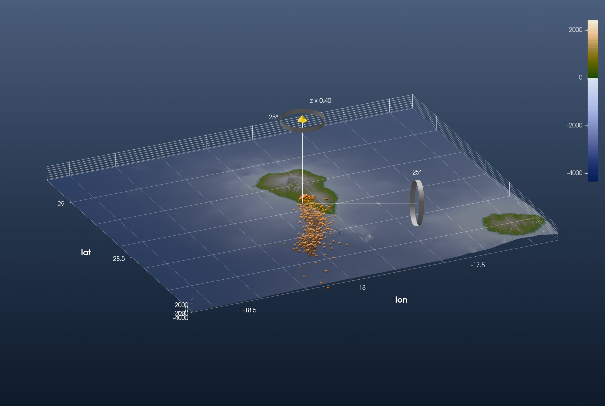
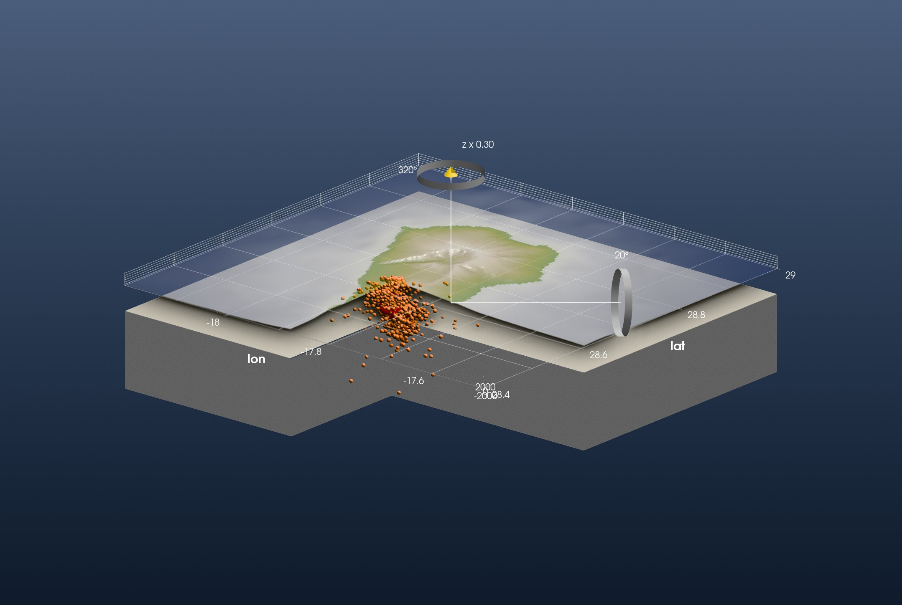

Tutorial: La Palma Volcano
This is the GeophysicalModelGenerator.jl tutorial La Palma volcano Model redone with iGMT and plain GMT.jl commands: no DelimitedFiles, no ParaView. Both of its figures are recreated below.
The data are the earthquakes of the 2021 Cumbre Vieja eruption on La Palma, from the IGN catalogue (ign.es), filtered by the GMG authors and published on Zenodo (10738510).
1. Topography and earthquakes
GMG's first figure spans La Palma and La Gomera, from 3″ earth relief:
using GMT, InteractiveGMT
Topo = grdcut("@earth_relief_03s", region=(-18.7, -17.1, 28.0, 29.2))The earthquake file has ten columns: longitude, latitude, depth (km), the date and time, and the magnitude last. GMG reads it with readdlm and picks the columns. gmtread does it in one call: incols keeps longitude, latitude, the depth turned into metres below sea level (+s-1000), and the magnitude:
download("https://zenodo.org/records/10738510/files/EQ_events_all_info5_LaPalma_2021.dat", "EQ_LaPalma_2021.dat")
EQ = gmtread("EQ_LaPalma_2021.dat", incols="0,1,2+s-1000,9")Show the topography and put every earthquake at its hypocentre, as a sphere sized by its magnitude (M −1 to 4.8). As in GMG's figure the topography is half transparent, so the earthquakes show through the sea floor:
fig = iview(Topo; cmap=:oleron)
add_symbols!(fig, EQ[:, 1], EQ[:, 2]; z=EQ[:, 3], symbol=:sphere, size=1 .+ (EQ[:, 4] .+ 1),
fill=:orange, name="Earthquakes 2021")
setopacity!(fig, 0.5)Switch to 3D on the toolbar, set View → Vertical Exaggeration… to 0.4, and look from the south-south-west:

This is GMG's first figure. The 4238 earthquakes form a column under the southern ridge of the island, down to 30 km, densest between 5 and 10 km. The shallow events at the top sit under the 2021 vent on the western flank (17.88° W, 28.61° N).
2. Earthquake density in 3-D
GMG turns the catalogue into a volume: it counts the earthquakes near every node of a 3-D grid, and where more than a threshold fall close together it marks the rock as magma. GMT counts points around grid nodes with binstats: C=:n counts, S="1k" counts within 1 km of each node. One horizontal layer is the earthquakes of a 1.5 km thick slab, picked by depth with gmtselect:
R = (-17.96, -17.68, 28.48, 28.70)
B = binstats(gmtselect(EQ, Z="-10750/-9250"), C=:n, S="1k", region=R, inc=0.005)The cube is that layer every 500 m from 27 km deep to sea level, stacked by mat2grid with the layer depths as its third coordinate:
zs = -27000:500:0
Count = mat2grid(cat([binstats(gmtselect(EQ, Z="$(z-750)/$(z+750)"), C=:n, S="1k", region=R, inc=0.005).z for z in zs]...; dims=3),
x=B.x, y=B.y, v=collect(Float64, zs))Up to 759 earthquakes fall around one node. Above 40 there are two bodies: one from sea level to 12 km under the western flank, and a smaller one between 15.5 and 24.5 km.
3. The model
GMG builds its model over La Palma alone:
TopoModel = grdcut("@earth_relief_15s", region=(-18.2, -17.5, 28.4, 29.0))The model has a lower crust below 15 km, cut open towards the viewer. Here the same quadrant, south-east of 17.875° W, 28.605° N, is cut out of the topography and of a flat grid 15 km down. grdmath sets it to NaN:
TopoCut = grdmath("? X -17.875 GT Y 28.605 LT MUL 1 NAN ADD", TopoModel)
Crust = grdmath("? 0 MUL X -17.875 GT Y 28.605 LT MUL 1 NAN ADD -15000 ADD", TopoModel)The crust's top and walls take plain colours:
beige = mat2img(cat(fill(0xd8, 2, 2), fill(0xd3, 2, 2), fill(0xc4, 2, 2); dims=3))
grey = mat2img(cat(fill(0x88, 2, 2), fill(0x88, 2, 2), fill(0x88, 2, 2); dims=3))The scene: the cut topography, the earthquakes, the crust's top on the topography's vertical scale, its walls as one curtain around the block and the cut, and the magma as an iso-surface of the count cube, the surface where it crosses 40:
fig = iview(TopoCut; cmap=:oleron)
add_symbols!(fig, EQ[:, 1], EQ[:, 2]; z=EQ[:, 3], symbol=:sphere, size=1 .+ (EQ[:, 4] .+ 1),
fill=:orange, name="Earthquakes 2021")
add!(fig, Crust; name="Lower crust", drape=beige, samezscale=true)
add_curtain!(fig, [-18.2 28.4; -17.875 28.4; -17.875 28.605; -17.5 28.605; -17.5 29.0; -18.2 29.0; -18.2 28.4];
image=grey, zrange=(-50000, -15000))
add_isosurface!(fig, Count; level=40, color=:red, name="Magma")
setvisible!(fig, "Surface")
setvisible!(fig, "Lower crust")
setopacity!(fig, 0.5)Every added layer brings its own axes. One figure has one set, the topography's, so the other two are switched off by their Axes rows:
setvisible!(fig, "Axes", false; layer="Lower crust")
setvisible!(fig, "Axes", false; layer="Magma")View → Vertical Exaggeration… sets 0.3 on the topmost layer on display. Set it on Magma, untick it, set it on Lower crust, untick that, set it on the topography, and tick both back on. Switch to 3D and look into the cut from the south-east:

This is GMG's second figure. The magma body sits in the thick of the earthquakes, from sea level to 12 km under the western flank.